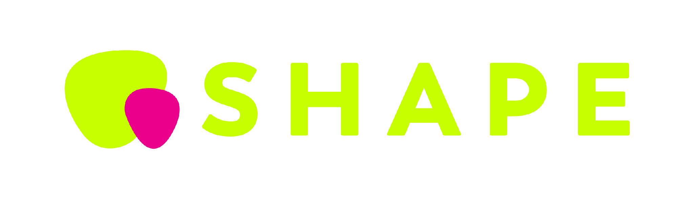

Le coach APA · en séance
Des modèles.
Des critères.
Des courbes.
EN SÉANCE
Repérer la fragilité : mesurer pour agir
« Je ne pose pas de diagnostic, mais je vois la personne bouger chaque semaine. »
01
Vitesse de marche
Sous 0,8 m/ssignal d'alerte
02
Force et lever de chaise
Dynamomètre de préhension · test des 5 levers de chaise
03
Écouter et transmettre
Fatigue
Perte de poids
Baisse d'activité
Équipe médicale
Ces mesures = point de départ pour suivre les progrès